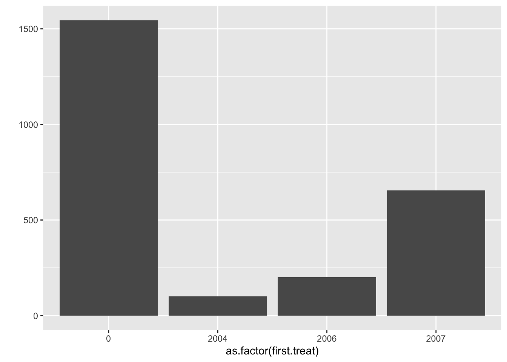

data(mpdta)11 Ступенчатая разность разностей
11.1 Напоминание теории
https://bcallaway11.github.io/did/articles/index.html https://github.com/naoki-egami/DIDdesign#Staggered-Adoption-Design
11.2 Пример
head(mpdta) year countyreal lpop lemp first.treat treat
866 2003 8001 5.896761 8.461469 2007 1
841 2004 8001 5.896761 8.336870 2007 1
842 2005 8001 5.896761 8.340217 2007 1
819 2006 8001 5.896761 8.378161 2007 1
827 2007 8001 5.896761 8.487352 2007 1
937 2003 8019 2.232377 4.997212 2007 1# estimate group-time average treatment effects without covariates
mw.attgt <- att_gt(yname = "lemp",
gname = "first.treat",
idname = "countyreal",
tname = "year",
xformla = ~1,
data = mpdta,
)
# summarize the results
summary(mw.attgt)
Call:
att_gt(yname = "lemp", tname = "year", idname = "countyreal",
gname = "first.treat", xformla = ~1, data = mpdta)
Reference: Callaway, Brantly and Pedro H.C. Sant'Anna. "Difference-in-Differences with Multiple Time Periods." Journal of Econometrics, Vol. 225, No. 2, pp. 200-230, 2021. <https://doi.org/10.1016/j.jeconom.2020.12.001>, <https://arxiv.org/abs/1803.09015>
Group-Time Average Treatment Effects:
Group Time ATT(g,t) Std. Error [95% Simult. Conf. Band]
2004 2004 -0.0105 0.0261 -0.0805 0.0595
2004 2005 -0.0704 0.0336 -0.1606 0.0198
2004 2006 -0.1373 0.0400 -0.2447 -0.0299 *
2004 2007 -0.1008 0.0369 -0.1998 -0.0018 *
2006 2004 0.0065 0.0236 -0.0568 0.0699
2006 2005 -0.0028 0.0198 -0.0559 0.0504
2006 2006 -0.0046 0.0167 -0.0495 0.0403
2006 2007 -0.0412 0.0210 -0.0976 0.0152
2007 2004 0.0305 0.0155 -0.0111 0.0721
2007 2005 -0.0027 0.0169 -0.0480 0.0425
2007 2006 -0.0311 0.0168 -0.0763 0.0141
2007 2007 -0.0261 0.0172 -0.0722 0.0201
---
Signif. codes: `*' confidence band does not cover 0
P-value for pre-test of parallel trends assumption: 0.16812
Control Group: Never Treated, Anticipation Periods: 0
Estimation Method: Doubly Robust# plot the results
# set ylim so that all plots have the same scale along y-axis
ggdid(mw.attgt, ylim = c(-.3,.3))
# aggregate the group-time average treatment effects
mw.dyn <- aggte(mw.attgt, type = "dynamic")
summary(mw.dyn)
Call:
aggte(MP = mw.attgt, type = "dynamic")
Reference: Callaway, Brantly and Pedro H.C. Sant'Anna. "Difference-in-Differences with Multiple Time Periods." Journal of Econometrics, Vol. 225, No. 2, pp. 200-230, 2021. <https://doi.org/10.1016/j.jeconom.2020.12.001>, <https://arxiv.org/abs/1803.09015>
Overall summary of ATT's based on event-study/dynamic aggregation:
ATT Std. Error [ 95% Conf. Int.]
-0.0772 0.0206 -0.1176 -0.0369 *
Dynamic Effects:
Event time Estimate Std. Error [95% Simult. Conf. Band]
-3 0.0305 0.0149 -0.0086 0.0696
-2 -0.0006 0.0132 -0.0351 0.0340
-1 -0.0245 0.0154 -0.0648 0.0158
0 -0.0199 0.0128 -0.0536 0.0137
1 -0.0510 0.0170 -0.0954 -0.0065 *
2 -0.1373 0.0412 -0.2453 -0.0292 *
3 -0.1008 0.0369 -0.1974 -0.0042 *
---
Signif. codes: `*' confidence band does not cover 0
Control Group: Never Treated, Anticipation Periods: 0
Estimation Method: Doubly Robustggdid(mw.dyn, ylim = c(-.3,.3))mw.dyn.balance <- aggte(mw.attgt, type = "dynamic", balance_e=1)
summary(mw.dyn.balance)
Call:
aggte(MP = mw.attgt, type = "dynamic", balance_e = 1)
Reference: Callaway, Brantly and Pedro H.C. Sant'Anna. "Difference-in-Differences with Multiple Time Periods." Journal of Econometrics, Vol. 225, No. 2, pp. 200-230, 2021. <https://doi.org/10.1016/j.jeconom.2020.12.001>, <https://arxiv.org/abs/1803.09015>
Overall summary of ATT's based on event-study/dynamic aggregation:
ATT Std. Error [ 95% Conf. Int.]
-0.0288 0.0134 -0.0549 -0.0026 *
Dynamic Effects:
Event time Estimate Std. Error [95% Simult. Conf. Band]
-2 0.0065 0.0224 -0.0469 0.0599
-1 -0.0028 0.0197 -0.0497 0.0442
0 -0.0066 0.0151 -0.0424 0.0293
1 -0.0510 0.0155 -0.0878 -0.0141 *
---
Signif. codes: `*' confidence band does not cover 0
Control Group: Never Treated, Anticipation Periods: 0
Estimation Method: Doubly Robustmw.attgt.X <- att_gt(yname = "lemp",
gname = "first.treat",
idname = "countyreal",
tname = "year",
xformla = ~lpop,
data = mpdta,
)